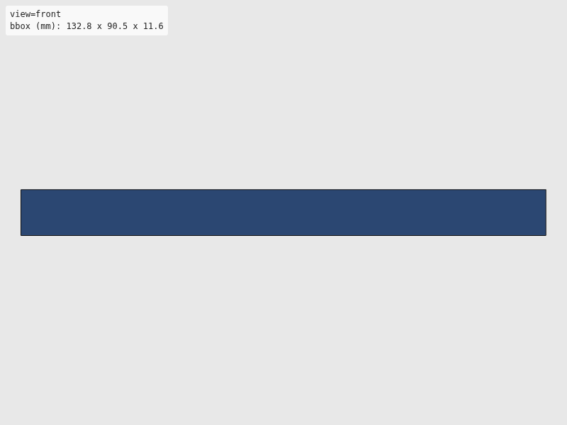
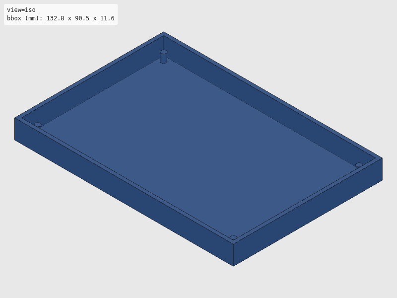
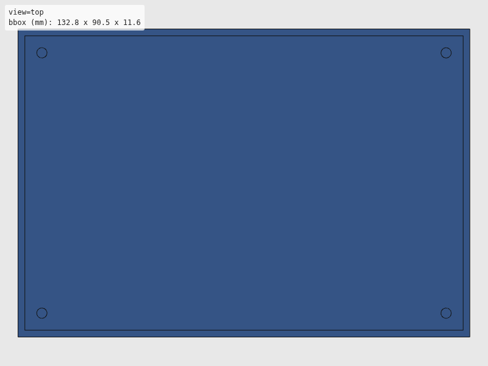
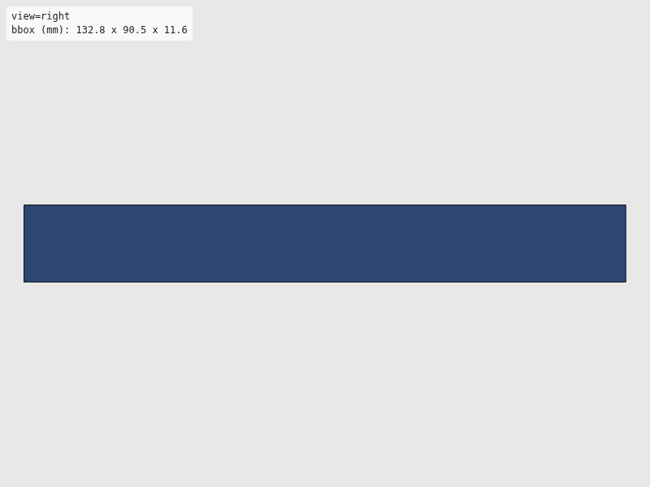

Verdict: review
Green is necessary, not sufficient: these checks cannot see local defects. Look at the render and decide.




The intent as written, for comparison with the renders. Not checked.
"""96-well plate holder with alignment pins.
SBS/ANSI standard footprint: 127.76 x 85.48 mm.
Reference: https://en.wikipedia.org/wiki/Microplate#Standards
Usage:
uv run --group cad python hardware/cad/labware/plate_holder.py
Exports:
hardware/stl/labware/96well_plate_holder.stl
hardware/svg/labware/96well_plate_holder.svg
"""
# Shared export helper (standalone mode)
import sys
from pathlib import Path
from build123d import Box, Cylinder, Pos
sys.path.append(str(Path(__file__).resolve().parent.parent))
from util.export import export_part
sys.path.pop()
# --- Parameters (all in mm) ---
# SBS standard plate footprint
PLATE_LENGTH = 127.76
PLATE_WIDTH = 85.48
PLATE_HEIGHT = 14.35 # Standard microplate height
# Holder dimensions
WALL_THICKNESS = 2.0
BASE_THICKNESS = 3.0
HOLDER_CLEARANCE = 0.5 # Gap between plate and holder walls
PIN_DIAMETER = 3.0
PIN_HEIGHT = 5.0
PIN_INSET = 5.0 # Distance from corner to pin center
# Derived
INNER_LENGTH = PLATE_LENGTH + HOLDER_CLEARANCE * 2
INNER_WIDTH = PLATE_WIDTH + HOLDER_CLEARANCE * 2
OUTER_LENGTH = INNER_LENGTH + WALL_THICKNESS * 2
OUTER_WIDTH = INNER_WIDTH + WALL_THICKNESS * 2
WALL_HEIGHT = PLATE_HEIGHT * 0.6 # Walls don't need to be full height
def build_plate_holder():
"""Build 96-well plate holder with alignment pins.
Returns:
build123d solid with the plate holder.
"""
# Base plate
holder = Pos(0, 0, BASE_THICKNESS / 2) * Box(OUTER_LENGTH, OUTER_WIDTH, BASE_THICKNESS)
# Cut inner pocket for plate (leave 1mm floor)
pocket_depth = BASE_THICKNESS - 1.0
pocket = Pos(0, 0, BASE_THICKNESS - pocket_depth / 2) * Box(
INNER_LENGTH, INNER_WIDTH, pocket_depth
)
holder = holder - pocket
# Add walls
walls = Pos(0, 0, BASE_THICKNESS + WALL_HEIGHT / 2) * Box(
OUTER_LENGTH, OUTER_WIDTH, WALL_HEIGHT
)
inner_cut = Pos(0, 0, BASE_THICKNESS + WALL_HEIGHT / 2) * Box(
INNER_LENGTH, INNER_WIDTH, WALL_HEIGHT + 1
)
walls = walls - inner_cut
holder = holder + walls
# Add alignment pins at corners
pin_positions = [
(INNER_LENGTH / 2 - PIN_INSET, INNER_WIDTH / 2 - PIN_INSET),
(-INNER_LENGTH / 2 + PIN_INSET, INNER_WIDTH / 2 - PIN_INSET),
(INNER_LENGTH / 2 - PIN_INSET, -INNER_WIDTH / 2 + PIN_INSET),
(-INNER_LENGTH / 2 + PIN_INSET, -INNER_WIDTH / 2 + PIN_INSET),
]
for x, y in pin_positions:
pin = Pos(x, y, BASE_THICKNESS + PIN_HEIGHT / 2) * Cylinder(PIN_DIAMETER / 2, PIN_HEIGHT)
holder = holder + pin
return holder
def export(holder) -> None:
"""Export to STL and SVG."""
export_part(holder, "labware", "96well_plate_holder")
if __name__ == "__main__":
holder = build_plate_holder()
export(holder)
| Check | Status | Detail |
|---|---|---|
| file_integrity | PASS | binary STL: header present, 2028 triangles, file length matches 84 + 50*n |
| watertight | PASS | watertight=True, winding_consistent=True, euler_number=10 (reported only, not asserted — plan §7.2) |
| bbox | SKIP | no --envelope given |
| volume | SKIP | no --volume-band given |
| browser_load | PASS | viewer reported body[data-state]=rendered |
| render | PASS | 4 view(s) captured at 800x600 |